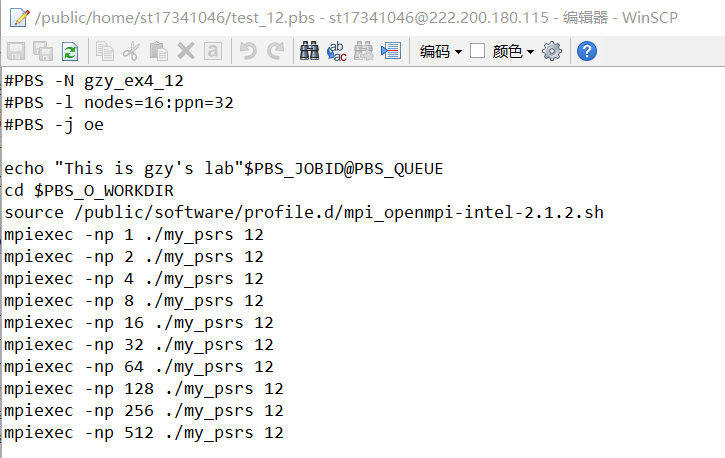
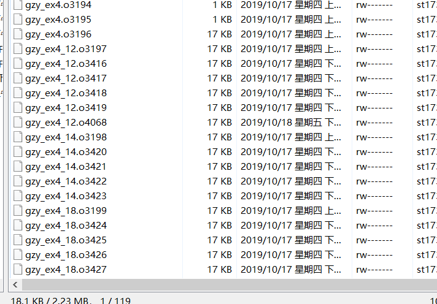
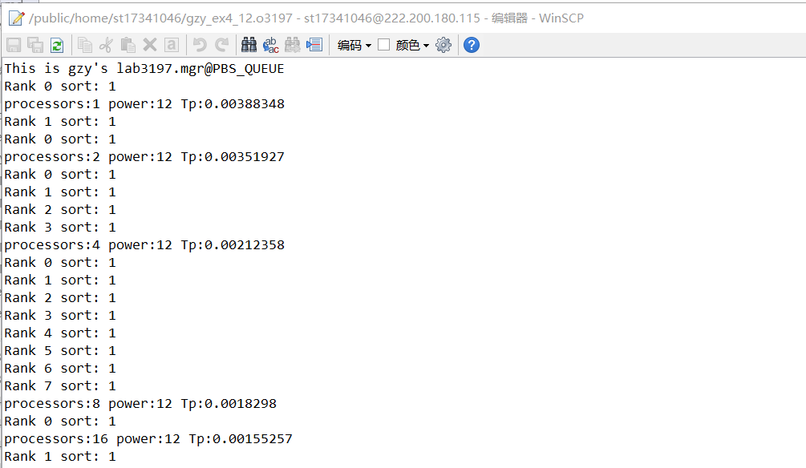
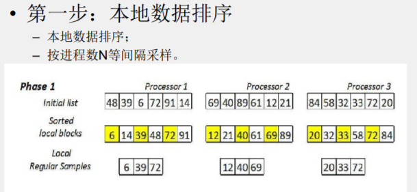
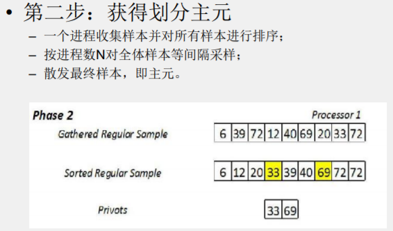
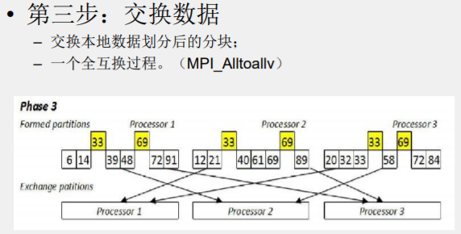
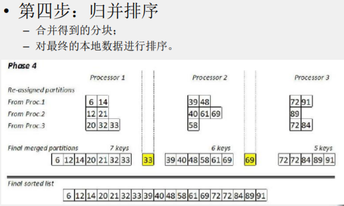
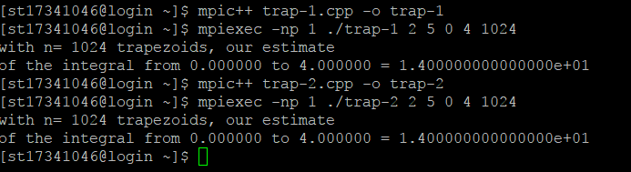
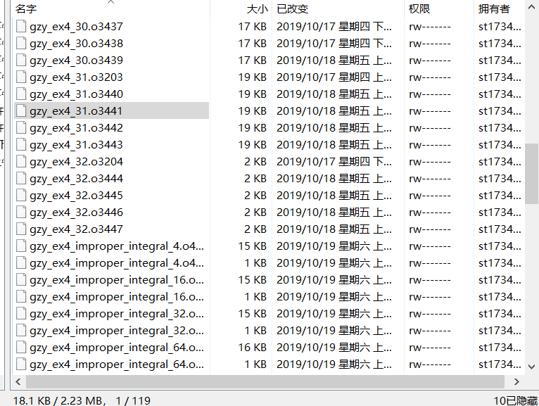

下图为12个进程的排序实验pbs脚本：


要得到可靠的数据只需要qsub多次求平均和即可，图中给出其中一例：

17341046 郭梓煜
left_h = atof(argv[1]); //梯形左边高度
right_h = atof(argv[2]); //梯形右边高度
a = atof(argv[3]); //左边坐标
b = atof(argv[4]); //右边坐标
n = atoi(argv[5]); //分块数量
h = (b - a) / n;
local_n = n / comm_sz;
local_a = a + my_rank * local_n * h;//计算区间左端点
local_b = local_a + local_n * h;//计算区间右端点
double left_h, right_h, a, b, c, d;
int n;
/* double f(double x)
{
return (right_h - left_h) / (b - a) * (x - a) + left_h;
}*/
double f(double x)
{
return exp(b * x) / sqrt(1 - exp(-c * x));
}
double Trap(double left_endpt, double right_endpt, int trap_count, double base_len)
{
if (left_endpt == 0)
left_endpt = eps;
double estimate, x;
estimate = (f(left_endpt) + f(right_endpt)) / 2.0;
for (int i = 1; i <= trap_count - 1; i++)
{
x = left_endpt + i * base_len;
estimate += f(x);
}
estimate = estimate * base_len;
return estimate;
}
MPI_Init(&argc,&argv);
MPI_Comm_rank(MPI_COMM_WORLD, &my_rank);
MPI_Comm_size(MPI_COMM_WORLD, &comm_sz);
h = (b - a) / n;
local_n = n / comm_sz;
local_a = a + my_rank * local_n * h;
local_b = local_a + local_n * h;
local_int = Trap(local_a, local_b, local_n, h); //计算积分
if (my_rank != 0)
MPI_Send(&local_int, 1, MPI_DOUBLE, 0, 0, MPI_COMM_WORLD); //发送给0号进程
else
{
total_int = local_int;
for (source = 1; source < comm_sz; source++)
{
MPI_Recv(&local_int, 1, MPI_DOUBLE, source, 0, MPI_COMM_WORLD, MPI_STATUS_IGNORE);
total_int += local_int; //计算总积分
}
}
if (my_rank == 0)
{
printf("block number n= %d\n", n);
printf("The integral from %f to %f = %.15e\n", a, b, total_int);
}
MPI_Finalize();
MPI_Reduce(&local_int, &total_int, 1, MPI_DOUBLE, MPI_SUM, 0, MPI_COMM_WORLD);
if (my_rank == 0)
{
printf("block number n= %d\n", n);
printf("The integral from %f to %f = %.15e\n", a, b, total_int);
}
对带瑕点的函数进行求积分，积分划分的区间不能是等长的，需要根据函数以及积分的精度问题进行区间的不同划分，即积分时要在瑕点处加密小区间，函数平缓处放宽小区间。
有三种做法：
相比较起来，第一种做法显得不那么合理对于分配进程来说，可能有的进程已经处理完了，有的还需要运行很久，第二种做法就显得合理许多，但是实现起来较为的复杂,甚至对于通信函数有的会出现溢出的情况，所以我选择第三种方法进行扩展。
主要代码如下：
//调用solve递归求得积分
local_int = solve(local_L, local_R, simpson(local_L, local_R));
dl f(dl x) //所求函数
{
if (x == 0)
return f(eps);
return exp(b * x) / sqrt(1 - exp(-c * x));
}
dl simpson(dl l, dl r)//辛普森公式
{
dl mid = (l + r) / 2;
return (f(l) + 4 * f(mid) + f(r)) * (r - l) / 6;
}
dl solve(dl L, dl R, dl ans)//递归求积分
{
dl mid = (L + R) / 2, l = simpson(L, mid), r = simpson(mid, R);
if (fabs(l + r - ans) <= eps)//若分半后精度够高10^-12则返回
return ans;
return solve(L, mid, l) + solve(mid, R, r);
}
···
//发送结果给0号进程
MPI_Reduce(&local_int, &total_int, 1, MPI_LONG_DOUBLE, MPI_SUM, 0, MPI_COMM_WORLD);
对于老师给的具体函数中，在0的时候是趋于正无穷的，只好在函数的定义中加上判断瑕点，如果为0，则改为求f(eps)，即f(0)约等于f(eps)。
尽管如此，在趋于0的区间求积分，积分的数值仍然是十分大的，难以避免地出现溢出的风险。不管是double还是long double都会溢出。
另外，在趋于0时，曲线斜率十分的大，如果只限制精度，可能永远都跑不出递归的循环，所以可以在代码中加上，分区次数的限制。
主要代码如下：
#define MAX_SECTION 10000
dl solve(dl L, dl R, dl ans)
{
num_section++;
dl mid = (L + R) / 2, l = simpson(L, mid), r = simpson(mid, R);
if (fabs(l + r - ans) <= eps || num_section > MAX_SECTION)
return ans; //超过分块最大数，也返回不再进行划分
return solve(L, mid, l) + solve(mid, R, r);
}
正则采样排序总的分为四个步骤：




进一步细分为8个步骤：
typedef unsigned long L;
#define BLOCK_LOW(my_rank, comm_sz, T) ((my_rank) * (T) / (comm_sz))
#define BLOCK_HIGH(my_rank, comm_sz, T) (BLOCK_LOW(my_rank + 1, comm_sz, T) - 1)
#define BLOCK_SIZE(my_rank, comm_sz, T) (BLOCK_HIGH(my_rank, comm_sz, T) - BLOCK_LOW(my_rank, comm_sz, T) + 1)
int power = strtol(argv[1], NULL, 10);
L dataLength = pow(2, power); //2^power个数
ifstream fin("/public/home/shared_dir/psrs_data", ios::binary);
//计算本进程计算数据块大小，以及读取位置
L myDataStart = BLOCK_LOW(my_rank, comm_sz, dataLength);
L myDataLength = BLOCK_SIZE(my_rank, comm_sz, dataLength);
fin.seekg((myDataStart + 1) * sizeof(L), ios::beg);
//读取各进程数据
L *myData = new L[myDataLength];
for (L i = 0; i < myDataLength; i++)
fin.read((char *)&myData[i], sizeof(L));
fin.close();
//排序本进程数据
sort(myData, myData + myDataLength);
//对数据进行等间隔采样即Regular samples，每个进程comm_sz个
L *regularSamples = new L[comm_sz];
for (int index = 0; index < comm_sz; index++)
regularSamples[index] = myData[(index * myDataLength) / comm_sz];
用一个进程对p个进程的共p×p个样本进行排序，此时样本都是局部有序的，使用归并能减少时间复杂度。
由0号进程负责样本排序，首先需要 MPI_Gather 操作，将样本收集起来，然后再进行归并。
gather代码如下：
//将所有Regular Samples发送给0号进程
L *gatherRegSam;
if (my_rank == 0)
gatherRegSam = new L[comm_sz * comm_sz];
// 参数分别为sendbuf, sendcount, sendtype, recvbuf, recvcount, recvtype, root, comm
MPI_Gather(regularSamples, comm_sz, MPI_UNSIGNED_LONG, gatherRegSam, comm_sz, MPI_UNSIGNED_LONG, 0, MPI_COMM_WORLD);
归并代码如下：
//0号进程执行归并排序
if (my_rank == 0)
{
// start用于存储gatherRegSam中各进程RegularSamples开始下标
L **start = new L *[comm_sz];
int *length = new int[comm_sz];
for (int i = 0; i < comm_sz; i++)
{
start[i] = &gatherRegSam[i * comm_sz];
length[i] = comm_sz;
}
//归并
L *sortedGatRegSam = new L[comm_sz * comm_sz];
merge(start, length, comm_sz, sortedGatRegSam, comm_sz * comm_sz);
···
}
由于之后还需要使用到归并排序所以考虑直接写一个单独的函数。 所调用的归并函数如下：
struct data
{
int stindex; // 待归并数组序号
int index; // 在数组中的序号
L stvalue;
data(int st = 0, int id = 0, L stv = 0) : stindex(st), index(id), stvalue(stv) {}
};
bool operator<(const data &One, const data &Two)
{
return One.stvalue > Two.stvalue;
}
void merge(L *start[], const int length[], const int number, L newArray[], const int newArrayLength)
{
priority_queue<data> q;
// 将每个待归并数组的第一个数加入优先队列
for (int i = 0; i < number; i++)
if (length[i] > 0)
q.push(data(i, 0, start[i][0]));
int newArrayindex = 0;
while (!q.empty() && (newArrayindex < newArrayLength))
{
// 取最小数据
data top_data = q.top();
q.pop();
// 将拿下的数据加入到结果数组中
newArray[newArrayindex++] = start[top_data.stindex][top_data.index];
// 若取出数据不是最后一个，将下一个元素push进优先队列
if (length[top_data.stindex] > (top_data.index + 1))
{
q.push(data(top_data.stindex, top_data.index + 1, start[top_data.stindex][top_data.index + 1]));
}
}
}
//取出主元
for (int i = 0; i < comm_sz - 1; i++)
privots[i] = sortedGatRegSam[(i + 1) * comm_sz];
//广播主元
MPI_Bcast(privots, comm_sz - 1, MPI_UNSIGNED_LONG, 0, MPI_COMM_WORLD);
//各进程按主元分段
int *partStartIndex = new int[comm_sz];
int *partLength = new int[comm_sz];
unsigned long dataIndex = 0;
for (int partIndex = 0; partIndex < comm_sz - 1; partIndex++)
{
partStartIndex[partIndex] = dataIndex;
partLength[partIndex] = 0;
while ((dataIndex < myDataLength) && (myData[dataIndex] <= privots[partIndex]))
{
dataIndex++;
partLength[partIndex]++;
}
}
partStartIndex[comm_sz - 1] = dataIndex;
partLength[comm_sz - 1] = myDataLength - dataIndex;
//全互换(ALLTOALL)
int *recvRankPartLen = new int[comm_sz];
MPI_Alltoall(partLength, 1, MPI_INT, recvRankPartLen, 1, MPI_INT, MPI_COMM_WORLD);
//ALLTOALLV
int rankPartLenSum = 0;
int *rankPartStart = new int[comm_sz];
for (int i = 0; i < comm_sz; i++)
{
rankPartStart[i] = rankPartLenSum;
rankPartLenSum += recvRankPartLen[i];
}
// 接收各进程i段的数组
L *recvPartData = new L[rankPartLenSum];
MPI_Alltoallv(myData, partLength, partStartIndex, MPI_UNSIGNED_LONG, recvPartData, recvRankPartLen, rankPartStart, MPI_UNSIGNED_LONG, MPI_COMM_WORLD);
// 归并
L **mulPartStart = new L *[comm_sz];
for (int i = 0; i < comm_sz; i++)
mulPartStart[i] = &recvPartData[rankPartStart[i]];
// 结果
L *sortedRes = new L[rankPartLenSum];
merge(mulPartStart, recvRankPartLen, comm_sz, sortedRes, rankPartLenSum);
//记录时间
double startTime, endTime;
MPI_Barrier(MPI_COMM_WORLD);
startTime = MPI_Wtime();
···
MPI_Barrier(MPI_COMM_WORLD);
endTime = MPI_Wtime();
bool check(L res[], int len)
{
for (int i = 0; i < len - 1; i++)
if (!(res[i] <= res[i + 1]))
return false;
return true;
}
//判断是否已经有序
cout << "Rank " << my_rank << " sort: " << check(sortedRes, rankPartLenSum) << endl;
source /public/software/profile.d/mpi_openmpi-intel-2.1.2.sh mpic++ -g gzy_ex4.cpp -o gzy_ex4
测试梯形积分法正确性
在集群上运行梯形积分代码，随机给出一个梯形，输出积分。
即运行trap-1，trap-2代码，图中测试一个上为2，下为5，高为4的梯形。
运行结果如下：

验证积分为(2+5)*4/2=14正确。
通过使用不同的方法求瑕积分，以及多次运行求平均运行时间得到采用梯形积分法和自适应积分法在不同进程数下的执行时间以及加速比和效率。
列出给出不同方法求积分的时间，加速比和效率
为计算简便，统一保留五位小数。
此处令该函数 b=1 c=2
梯形求瑕积分法(p为进程数，n为区间数)
| n\p | 1 | 2 | 4 | 8 | 16 | 32 | 64 | 128 | 256 | 512 |
|---|---|---|---|---|---|---|---|---|---|---|
| 1e5 | 0.00987 | 0.00795 | 0.00401 | 0.00171 | 0.00104 | 0.00068 | 0.02802 | 0.02631 | 0.02956 | 0.16472 |
| 1e6 | 0.10329 | 0.06566 | 0.07828 | 0.01896 | 0.01688 | 0.00625 | 0.03091 | 0.03117 | 0.03092 | 0.15755 |
| 1e7 | 0.77722 | 0.47133 | 1.26377 | 0.13342 | 0.11715 | 0.058561 | 0.04578 | 0.03751 | 0.03424 | 0.02724 |
| 1e8 | 6.70629 | 3.35805 | 1.93492 | 1.03475 | 0.55037 | 1.35712 | 1.20548 | 0.11513 | 0.06445 | 0.04571 |
| 1e9 | 56.1608 | 28.7594 | 15.0298 | 7.60309 | 4.24326 | 2.35722 | 1.36813 | 0.70203 | 0.33714 | 0.21874 |
| n\p | 1 | 2 | 4 | 8 | 16 | 32 | 64 | 128 | 256 | 512 |
|---|---|---|---|---|---|---|---|---|---|---|
| 1e5 | 1 | 1.99457 | 2.47215 | 5.80486 | 9.48137 | 14.50881 | 0.35251 | 0.37565 | 0.33409 | 0.06153 |
| 1e6 | 1 | 1.90017 | 2.6981 | 5.44901 | 6.11832 | 16.53691 | 3.33972 | 3.31381 | 3.34019 | 5.65277 |
| 1e7 | 1 | 1.83202 | 2.94659 | 5.82515 | 6.63124 | 13.27141 | 16.9778 | 20.7161 | 22.6979 | 26.6666 |
| 1e8 | 1 | 1.91708 | 3.465931 | 6.48107 | 12.18520 | 18.78168 | 32.6372 | 58.2487 | 104.049 | 136.171 |
| 1e9 | 1 | 1.85278 | 3.73663 | 7.38658 | 13.23531 | 23.8241 | 41.0493 | 79.9982 | 166.576 | 257.098 |
-效率
| n\p | 1 | 2 | 4 | 8 | 16 | 32 | 64 | 128 | 256 | 512 |
|---|---|---|---|---|---|---|---|---|---|---|
| 1e5 | 1 | 0.62123 | 0.61803 | 0.72561 | 0.59270 | 0.45340 | 0.00551 | 0.00293 | 0.00131 | 0.00012 |
| 1e6 | 1 | 0.78653 | 0.67453 | 0.68113 | 0.38241 | 0.51687 | 0.05218 | 0.02589 | 0.01304 | 0.00127 |
| 1e7 | 1 | 0.82451 | 0.73664 | 0.72814 | 0.41466 | 0.41473 | 0.26528 | 0.16184 | 0.08866 | 0.05208 |
| 1e8 | 1 | 0.99854 | 0.86648 | 0.81013 | 0.76157 | 0.58709 | 0.50996 | 0.45509 | 0.40644 | 0.26594 |
| 1e9 | 1 | 0.97639 | 0.93416 | 0.92332 | 0.82721 | 0.74453 | 0.641396 | 0.62498 | 0.65069 | 0.50211 |
| n\p | 1 | 2 | 4 | 8 | 16 | 32 | 64 | 128 | 256 | 512 |
|---|---|---|---|---|---|---|---|---|---|---|
| 1e5 | 0.01427 | 0.00720 | 0.00286 | 0.00205 | 0.00119 | 0.00085 | 0.02499 | 0.02631 | 0.02756 | 0.16052 |
| 1e6 | 0.12208 | 0.06736 | 0.03875 | 0.01968 | 0.01099 | 0.00636 | 0.03091 | 0.03051 | 0.02992 | 0.15823 |
| 1e7 | 0.78147 | 0.41677 | 0.19625 | 0.14945 | 0.08089 | 0.05723 | 0.04578 | 0.04363 | 0.03624 | 0.02914 |
| 1e8 | 6.0994 | 3.31550 | 1.94642 | 1.49288 | 0.55037 | 0.323587 | 1.20548 | 0.22991 | 0.11445 | 0.04925 |
| 1e9 | 56.7137 | 28.9901 | 15.03917 | 7.89026 | 3.91178 | 2.39161 | 1.36813 | 1.38913 | 0.64714 | 0.21844 |
| n\p | 1 | 2 | 4 | 8 | 16 | 32 | 64 | 128 | 256 | 512 |
|---|---|---|---|---|---|---|---|---|---|---|
| 1e5 | 1 | 1.84147 | 3.46115 | 5.84486 | 9.48137 | 14.50881 | 0.51251 | 0.37545 | 0.35649 | 0.35683 |
| 1e6 | 1 | 1.87017 | 3.6981 | 5.44901 | 10.11832 | 16.53691 | 10.33972 | 3.31381 | 3.34019 | 5.65277 |
| 1e7 | 1 | 1.84202 | 3.94659 | 6.82875 | 11.63124 | 13.27141 | 16.25778 | 20.7161 | 22.6979 | 26.6666 |
| 1e8 | 1 | 1.99708 | 4.46531 | 6.35987 | 12.18520 | 18.78168 | 32.6372 | 58.2487 | 104.049 | 136.171 |
| 1e9 | 1 | 1.95278 | 4.73663 | 7.38658 | 13.23531 | 23.8241 | 42.0493 | 79.9982 | 166.576 | 257.098 |
-效率
| n\p | 1 | 2 | 4 | 8 | 16 | 32 | 64 | 128 | 256 | 512 |
|---|---|---|---|---|---|---|---|---|---|---|
| 1e5 | 1 | 0.99123 | 0.75803 | 0.73581 | 0.69270 | 0.55340 | 0.00551 | 0.00293 | 0.00211 | 0.00011 |
| 1e6 | 1 | 0.98653 | 0.68853 | 0.68113 | 0.38241 | 0.51687 | 0.04358 | 0.02589 | 0.01424 | 0.00777 |
| 1e7 | 1 | 0.92451 | 0.74578 | 0.756414 | 0.41466 | 0.5473 | 0.26528 | 0.16184 | 0.08866 | 0.05428 |
| 1e8 | 1 | 0.99854 | 0.86648 | 0.81013 | 0.76157 | 0.58709 | 0.50996 | 0.45509 | 0.40644 | 0.25494 |
| 1e9 | 1 | 0.97639 | 0.93416 | 0.92332 | 0.82721 | 0.74453 | 0.641396 | 0.62498 | 0.65069 | 0.56211 |
自适应区间求瑕积分法
| L\p | 1 | 2 | 4 | 8 | 16 | 32 | 64 | 128 | 256 | 512 |
|---|---|---|---|---|---|---|---|---|---|---|
| 1000 | 0.00361 | 0.00426 | 0.00172 | 0.00085 | 0.00069 | 0.00044 | 0.02573 | 0.02585 | 0.03075 | 0.03466 |
| 2000 | 628.982 | 315.69621 | 158.722 | 79.6353 | 40.3837 | 21.0089 | 10.4754 | 5.61995 | 2.97983 | 1.65514 |
| 4000 | 1341.52 | 673.93842 | 339.976 | 170.2301 | 86.1511 | 43.2805 | 21.9278 | 11.227 | 5.71526 | 3.17949 |
| 8000 | 1472.98 | 824.566 | 412.746 | 237.732 | 105.414 | 52.596 | 26.4849 | 13.5098 | 6.95233 | 4.09975 |
| 16000 | 1800.51 | 904.062 | 455.755 | 218.943 | 114.117 | 57.7479 | 29.0586 | 15.8273 | 8.1492 | 4.18815 |
| L\p | 1 | 2 | 4 | 8 | 16 | 32 | 64 | 128 | 256 | 512 |
|---|---|---|---|---|---|---|---|---|---|---|
| 1000 | 1 | 2.02751 | 3.84879 | 6.97956 | 9.53518 | 14.7838 | 0.25702 | 0.25575 | 0.21502 | 0.19071 |
| 2000 | 1 | 1.99237 | 3.95279 | 7.89828 | 15.5751 | 29.9388 | 60.04317 | 101.92142 | 211.08 | 380.017 |
| 4000 | 1 | 1.99057 | 3.94593 | 7.88063 | 15.5717 | 30.9959 | 61.17901 | 119.49121 | 224.726 | 421.929 |
| 8000 | 1 | 1.98041 | 3.94638 | 6.86901 | 15.4911 | 31.0476 | 61.65714 | 120.874 | 234.881 | 398.312 |
| 16000 | 1 | 1.99158 | 3.95061 | 7.86412 | 15.7778 | 31.1788 | 61.96131 | 113.76 | 220.943 | 419.906 |
-效率
| L\p | 1 | 2 | 4 | 8 | 16 | 32 | 64 | 128 | 256 | 512 |
|---|---|---|---|---|---|---|---|---|---|---|
| 1000 | 1 | 1.01375 | 0.96219 | 0.87369 | 0.69595 | 0.46199 | 0.00421 | 0.00201 | 0.00084 | 0.00037 |
| 2000 | 1 | 0.99618 | 0.99069 | 0.98728 | 0.97344 | 0.93558 | 0.93818 | 0.87437 | 0.82453 | 0.74222 |
| 4000 | 1 | 0.99528 | 0.98648 | 0.98507 | 0.97323 | 0.96862 | 0.95592 | 0.93352 | 0.91689 | 0.82408 |
| 8000 | 1 | 0.99021 | 0.98909 | 0.85862 | 0.96819 | 0.97023 | 0.96339 | 0.94433 | 0.91751 | 0.77795 |
| 1600 | 1 | 0.99579 | 0.98765 | 0.98301 | 0.98611 | 0.97433 | 0.96814 | 0.88875 | 0.86341 | 0.83966 |
通过对PSRS排序的多次运行，以及求平均运行时间，列出时间，加速比和效率，如下：
| n\p | 1 | 2 | 4 | 8 | 16 | 32 | 64 | 128 | 256 | 512 |
|---|---|---|---|---|---|---|---|---|---|---|
| 12 | 0.00160 | 0.00352 | 0.00135 | 0.00143 | 0.00151 | 0.00421 | 0.68127 | 1.03597 | 0.95697 | 1.00291 |
| 14 | 0.00527 | 0.01065 | 0.00629 | 0.00331 | 0.00344 | 0.00355 | 0.69950 | 1.77570 | 2.23623 | 1.99840 |
| 18 | 0.07187 | 0.16030 | 0.10520 | 0.06061 | 0.03074 | 0.02067 | 0.66733 | 1.81938 | 4.45618 | 9.01119 |
| 22 | 1.08838 | 1.97634 | 1.01482 | 0.59784 | 0.37223 | 0.20264 | 0.76625 | 1.88111 | 4.24018 | 9.13574 |
| 26 | 18.2348 | 25.43020 | 14.16880 | 8.30737 | 4.34764 | 2.35469 | 2.03540 | 2.54437 | 4.51008 | 9.27673 |
| 30 | 334.808 | 432.77400 | 237.26100 | 128.56600 | 68.61070 | 35.56160 | 19.48390 | 12.28040 | 9.41573 | 12.24180 |
| 31 | 692.25 | 967.18400 | 493.79700 | 267.11700 | 137.94400 | 71.54530 | 38.04640 | 21.60590 | 14.82660 | 14.63760 |
| 32 | 1436.14 | X | 963.60000 | 533.89400 | 304.82500 | 144.62800 | 76.42060 | 41.66870 | 25.09660 | 19.76440 |
| n\p | 1 | 2 | 4 | 8 | 16 | 32 | 64 | 128 | 256 | 512 |
|---|---|---|---|---|---|---|---|---|---|---|
| 12 | 1 | 0.45510 | 1.18149 | 1.11839 | 1.06093 | 0.38037 | 0.00235 | 0.00155 | 0.00167 | 1.00291 |
| 14 | 1 | 0.49555 | 0.838801 | 1.59235 | 1.53443 | 1.48574 | 0.00754 | 0.00297 | 0.00236 | 1.99840 |
| 18 | 1 | 0.44841 | 0.68324 | 1.18593 | 2.33805 | 3.47696 | 0.10771 | 0.03951 | 0.01613 | 9.01119 |
| 22 | 1 | 0.55070 | 1.07249 | 1.82051 | 2.92393 | 5.37090 | 1.42040 | 0.57858 | 0.25668 | 9.13574 |
| 26 | 1 | 0.71705 | 1.28697 | 2.19501 | 4.19418 | 7.74403 | 8.95883 | 7.16672 | 4.04312 | 9.27673 |
| 30 | 1 | 0.77363 | 1.41114 | 2.60417 | 4.87982 | 9.41487 | 17.18383 | 27.26361 | 35.55837 | 12.24180 |
| 31 | 1 | 0.71574 | 1.40189 | 2.59156 | 5.01834 | 9.67569 | 18.19489 | 32.03986 | 46.68973 | 14.63760 |
| 32 | 1 | X | 1.49039 | 2.68993 | 4.71136 | 9.92989 | 18.79258 | 34.46568 | 57.22448 | 19.76440 |
| n\p | 1 | 2 | 4 | 8 | 16 | 32 | 64 | 128 | 256 | 512 |
|---|---|---|---|---|---|---|---|---|---|---|
| 12 | 1 | 0.22755 | 0.29537 | 0.13980 | 0.06631 | 0.01189 | 0.00004 | 0.00001 | 0.00001 | 0.00001 |
| 14 | 1 | 0.24777 | 0.20970 | 0.19904 | 0.09590 | 0.04643 | 0.00012 | 0.00002 | 0.00001 | 0.00001 |
| 18 | 1 | 0.22420 | 0.17081 | 0.14824 | 0.14613 | 0.10866 | 0.00168 | 0.00031 | 0.00006 | 0.00002 |
| 22 | 1 | 0.27535 | 0.26812 | 0.22756 | 0.18275 | 0.16784 | 0.02219 | 0.00452 | 0.00100 | 0.00023 |
| 26 | 1 | 0.35853 | 0.32174 | 0.27438 | 0.26214 | 0.24200 | 0.13998 | 0.05599 | 0.01579 | 0.00384 |
| 30 | 1 | 0.38682 | 0.35278 | 0.32552 | 0.30499 | 0.29421 | 0.26850 | 0.21300 | 0.13890 | 0.05342 |
| 31 | 1 | 0.35787 | 0.35047 | 0.32395 | 0.31365 | 0.30237 | 0.28430 | 0.25031 | 0.18238 | 0.09237 |
| 32 | 1 | X | 0.37260 | 0.33624 | 0.29446 | 0.31031 | 0.29363 | 0.26926 | 0.22353 | 0.14192 |
利用点对点通信函数，集合通信函数求数值积分，相对简单。主要遇到的难点在于对瑕积分进行扩展时，一开始我总是十分疑惑在瑕点时怎么求积分呢，难道不是趋于无穷吗，怎么可能求得出来呢。后来我只能通过限制精度以及分区块数来限制瑕点对求积分造成的影响，以使程序能够运行成功得到积分数值。尽管在(0,L]区间，得到的积分必然会超出double或者long double的范围。而对于0点的数值无法求得那也只好令f(0)=f(eps)得到一个近似值。
另外，在写PSRS排序时，使用归并排序时也是一个难点，如何对存于一个数组中不同进程发来的数据进行归并排序着实困惑了我一段时间。后来还是在网上借鉴了别人的想法，利用结构体记录具体的不同进程数据的具体位置，以及采用一个优先队列简化了原本复杂的排序过程，此间还需要对<的operator进行重载。
还有在PSRS还遇到了溢出的问题。没想到MPI_Alltoallv中的sendcounts, sdispls, recvcounts, rdispls都是 const int *类型，不能是 unsigned long * 类型。所以数据发送的长度不能超过2^31-1,因此在进程数 p=2 和总数据量为 2^32 的情况下运行一定会出现错误（因为分成的两段数据一定有一段要超过 2^31 −1)。
总的来说，这次实验虽然看起来表面简单，但其实上需要思考处理的问题挺难的。在求瑕积分时瑕点的求积着实困扰了我很久，最后还是查阅了数值积分的书籍，用自适应积分解决了问题，尽管可能和老师的想法有些偏差，但是我想核心是差不多的，都是对区间进行合理分块，并且通过进程间通信来解决问题。PSRS排序也差不多都是通过点对点以及集合通信的MPI函数来实现多进程执行并完成复杂的工作。
另外，这次的工作量其实也挺大的，四个程序，每个程序都要求不同进程数，不同规模大小的平均时间以及加速比和效率，同样也花费了不少时间，而且在集群中跑的时间也需要花费不少，产生了十分多的数据。

综上所述，通过这次实验，我对MPI函数的运行更加熟悉，也对进程间的通信更加了解了，获益匪浅。